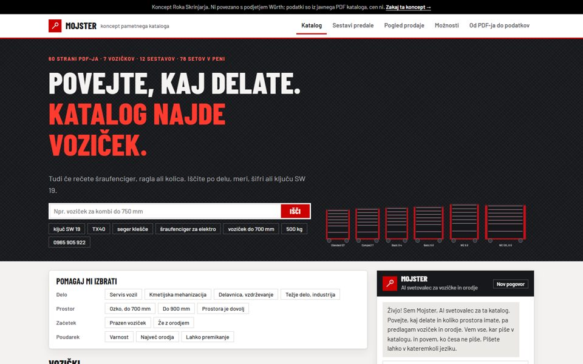
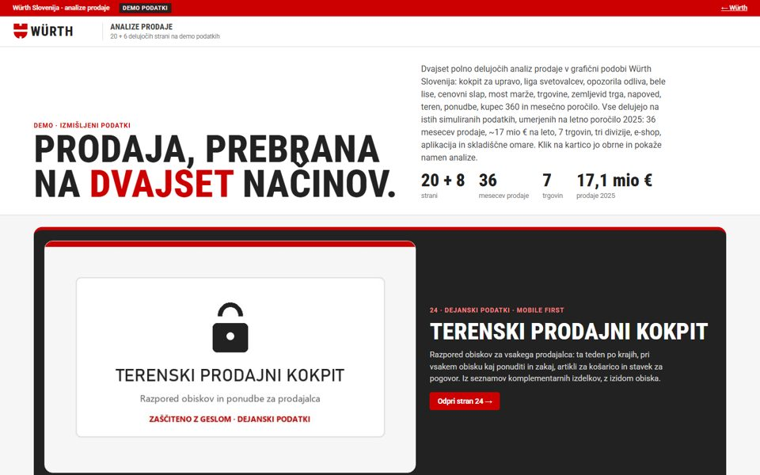

WÜRTH SLOVENIJA
Dva koncepta: za kupce in za prodajo
Pametni katalog pomaga kupcu najti pravi izdelek. Sales Ops pomaga prodajni ekipi vedeti, komu kaj ponuditi — od analiz prodaje do seznamov kupcev in razporeda obiskov.

Za kupce
Pametni katalog
Katalog vozičkov in orodja kot pametna spletna stran: iskanje v naravnem jeziku, primerjava, konfigurator predalov in AI svetovalec.
Odpri pametni katalog →
Za prodajo
Sales Ops
Analize prodaje in orodja za prodajno ekipo: kokpiti, priložnosti, napovedi, komplementarni izdelki, terenski kokpit in razlage.
Odpri Sales Ops →Koncepti. Strani z dejanskimi prodajnimi podatki so zaščitene z geslom; ostale uporabljajo izmišljene, simulirane podatke.